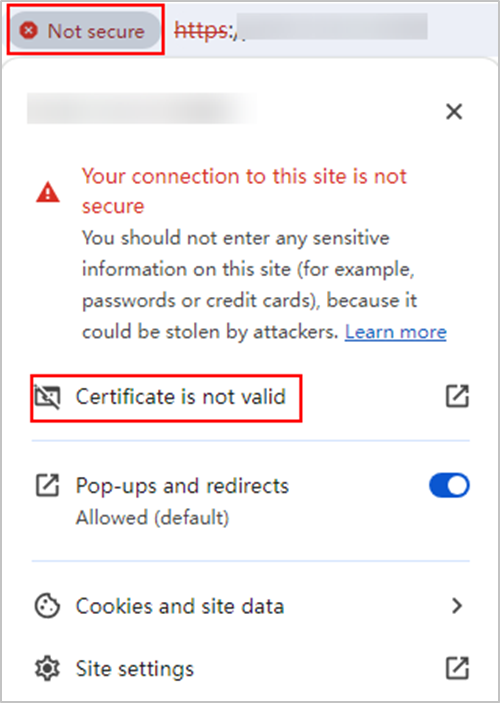

When registering a Huawei Cloud Stack protected environment, you can import the Cinder certificate and CA certificates of storage resources to improve access security between devices. Otherwise, the system cannot verify information about the devices to be accessed, causing security risks. This operation is optional.
You can obtain it from the administrator or download it by yourself.
Downloading the Cinder Certificate
- Open Google Chrome, enter https://FusionSphere OpenStack reverse proxy IP address in the address box, and press Enter.
Obtain the IP address for accessing FusionSphere OpenStack: On the Tool_generated_IP_Params sheet of xxx_export_all_EN exported by the Huawei Cloud Stack deployment tool, search for Reverse-Proxy to obtain the corresponding parameter value.

- For Huawei Cloud Stack 6.5.1, search for Cascading-Reverse-Proxy.
- If Huawei Cloud Stack has multiple regions, obtain the parameter summary file of the primary region.
- Click Not secure on the left of the URL address box, and click Certificate is not valid.
The displayed information varies depending on the browser. The following uses Google Chrome 120 as an example.

- In the dialog box that is displayed, click the General tab to view the certificate security algorithm level.
Only algorithms with the security level of SHA-256 or higher can pass the verification of the OceanProtect. Therefore, if the certificate security level does not meet the requirements, no further action is required. If the certificate security level meets the requirements, go to 4.

- Click the Details tab and click Export.
- Export the certificate and rename the certificate file XXX.pem as prompted.
XXX indicates the actual certificate name. The certificate must be in .pem format.
Downloading the Storage Resource CA Certificate
If OceanStor Dorado 6.1.5 or later or OceanStor 6.1.5 or later is used as the production storage, the following methods cannot be used to obtain the CA certificate. For details about how to obtain the CA certificate, see "Issuing Certificates from the Built-in CA of the Storage System" in the OceanStor Dorado Product Documentation or OceanStor Product Documentation.
- Method 1:
- Log in to the website for downloading a PKI CA certificate.
- Click Level-2 CA.
- Enter Huawei IT Product CA in the search box and click Search.
- In the query result area, click
 in the row of the target Huawei IT Product CA certificate to download the certificate and save it locally.
in the row of the target Huawei IT Product CA certificate to download the certificate and save it locally. The certificate file must be in .pem format. If the format of the saved certificate file does not meet the requirements, manually change the file name extension to .pem.
- Method 2:The displayed information varies depending on the browser. The following uses Google Chrome 120 as an example.
- In the address box of Google Chrome, type the URL of DeviceManager of the storage device and press Enter.
- Click Not secure on the left of the URL address box, and click Certificate is not valid.

- In the dialog box that is displayed, click the Details tab and click Export.
- Export the certificate and rename the certificate file XXX.pem as prompted.
XXX indicates the actual certificate name. The certificate must be in .pem format.